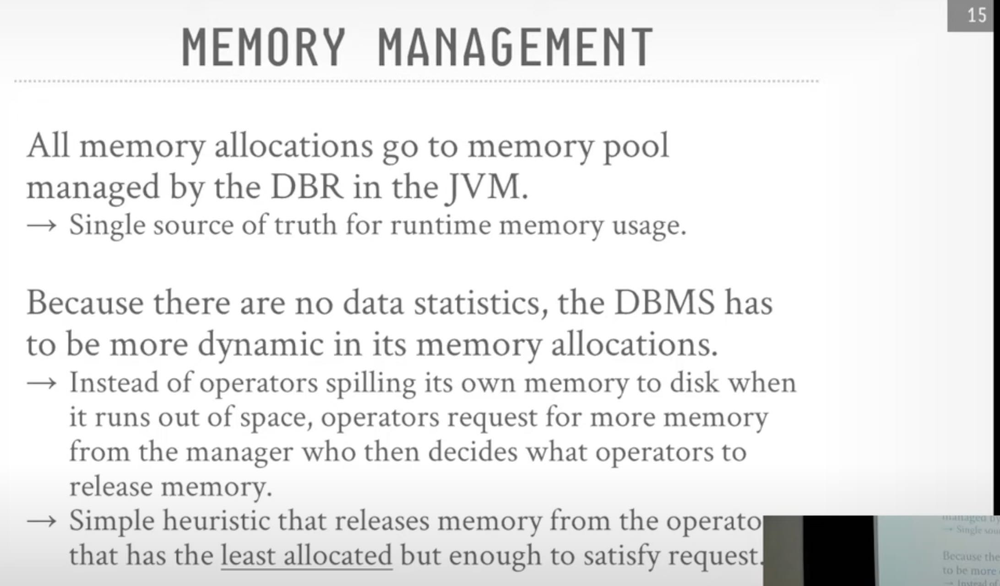
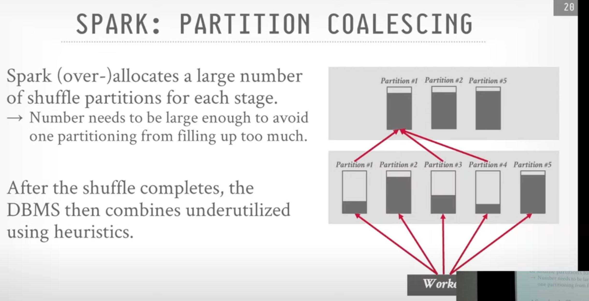

CMUDB Talk on Photon
(S2024 #18 - Databricks Photon / Spark SQL (CMU Advanced Database Systems) - YouTube
看来JVM也会有自身的问题，JIT限制比较多可能不够predictable, GC这个东西不太好控制。
Photon 一些技术上的选择



数据湖上面临的一个挑战是怎么增量地收集统计信息. delta lake, kudu, hudi, iceberg 都需要解决这些问题